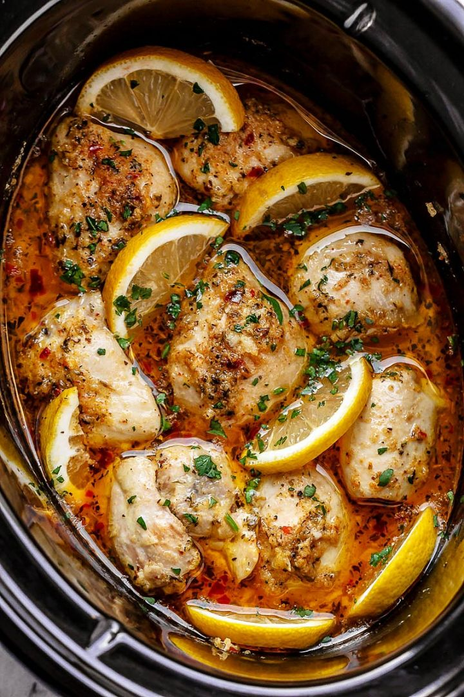
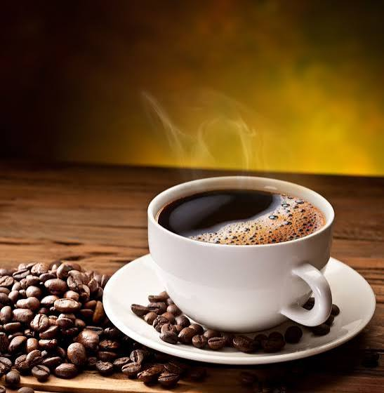
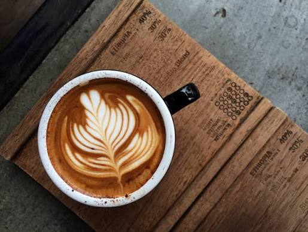
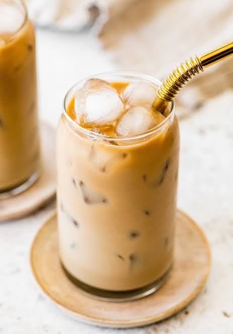

Food menu
Our herb-baked chicken plate is a homestyle favorite, served with rice and seasonal vegetables.
Exam-week special: Students get 15% off Monday through Friday during midterm and final exam weeks. Bring your student ID.
| Item | Description | Price |
|---|---|---|
 After-Hours Baked Chicken |
Herb-baked chicken with rice and seasonal vegetables. Pair it with a drink. | $13.50 |
| Midnight Steak Bowl | Sliced steak over rice with roasted vegetables. | $16.00 |
| Slow-Simmered Chicken Soup | Chicken and garden vegetables in a cozy broth. | $9.50 |
| Ask us about ingredients and allergens; a glass of H2O is always available. | ||
Drink menu
- Hot coffee — $3.00
- Latte — $5.25
- Cold Brew — $4.25
- We Also Have Sweet Tea!!!
| Drink | How it's prepared |
|---|---|
 Hot coffee |
Freshly ground coffee beans are brewed with hot water and served steaming. |
 Latte |
Espresso is topped with steamed milk, then finished with latte art. |
 Cold brew |
Coarsely ground coffee is steeped in cold water and served over ice. |
For calories and basic macronutrient information, visit USDA FoodData Central. For general caffeine information, see the FDA's caffeine guidance; caffeine varies by recipe and serving size.
A warm cup and a good record make the night feel easy.
Hours of operation
We're open daily from 4:00 p.m. to 2:00 a.m. Find us at 117 SR-81 N, Tuskegee, AL 36083.
Live music fills the room Thursday through Saturday.
About us
By day, the city moves fast; after sunset, Midnight Café makes room to slow down. Come for familiar food and drinks, stay for the warm lights and a little jazz.
- Late-night comfort food
- Homestyle chicken and steak plates
- Vegetable sides and slow-simmered soup
- Hot drinks and cool treats
- Live jazz Thursday through Saturday evenings, 8:00–11:00 p.m.; arrive early for a good seat.
How to enjoy a visit
- Choose a plate or drink from the menus.
- Order with the café team at the counter.
- Pick up your order and find a cozy seat.